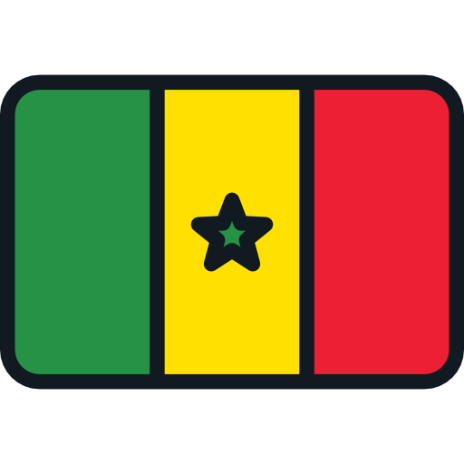

Lunes 21-11 / 07:00 hs

Senegal

P. Bajos
Senegal
P. Bajos

Qatar

Ecuador

Inglaterra
Iran
EE.UU
Gales

Argentina

A.Saudita

Mexico

Polonia
#Compartimos la misma pasion, por eso en nuestro sitio encontras todo lo que necesitas saber con respecto al mundial de futbol masculino organizado por FIFA en Qatar. Conoce las sedes, los grupos, el fixture. Todo el contenido que un verdadero fanatico quiere tener.
Ya esta todo listo para que arranque el mundial, se definieron los ultimos clasificados, con el pitazo final que declaro el ingreso de Costa Rica se termino de completar la fase de grupos, un mundial atipico que se juega en Diciembre, con muy poco tiempo de descanso entre partidos y afectado por las altas temperaturas del pais asiatico.
Otra particularidad importante de este mundial es la poca distancia entre estadios, posibilitando a los fanaticos mirar en vivo mas de un partido por dia sin perderce nada, ESO SI!, no olvides sacar TU FAN ID, es la unica forma de acceder a los estadios.

La FIFA sube a 26 la lista de convocados para el mundial

Pena de carcel para quienes tengan sexo extramatrimonial, o tengan demostraciones de afecto en publico
La FIFA cambia el reglamento, los arqueros deberan tener los dos pies sobre la linea al momento de patearse un penal